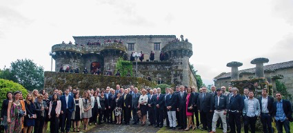
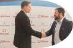
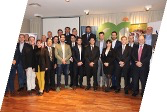
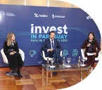

Over the last decade, ALF has executed trade missions that bring U.S. business leaders, investors, governments and regional institutions closer together across Europe, Latin America and the Caribbean.
ALF trade missions are designed as practical platforms for economic diplomacy. They attract foreign direct investment, promote exports and market access, facilitate technology transfer, position cities and regions globally, and strengthen institutional credibility by bringing governments, companies, investors and multilateral institutions into the same strategic conversation.
Designed with local and regional governments and officially certified by the U.S. Department of Commerce, these missions spotlight a territory’s industries, infrastructure, workforce and investment potential while opening trusted channels with U.S. business leaders.
Co-organized with international organizations such as the Inter-American Development Bank, these missions bring governments, companies and investors together within a broader multilateral framework, expanding visibility, credibility and access to regional opportunities.
Opening an international gateway between Europe, the Mediterranean and U.S. investors.

A Galician platform for investment, innovation and transatlantic economic relationships.
A technology-focused mission connecting U.S. companies with Andalusian opportunities.
Promoting regional competitiveness, productive sectors and international positioning.

A platform for investment attraction and stronger U.S.–Argentina business ties.

Connecting the province’s productive ecosystem with U.S. business leaders and investors.

Showcasing productive sectors from viticulture and agroindustry to lithium, energy and tourism.
A regional platform for digital services, outsourcing and investment opportunities.

Connecting U.S. companies with Paraguayan institutions, investors and business leaders.

Opening new channels for sustainable business cooperation in one of Latin America’s most stable markets.
Linking investors with strategic sectors, public institutions and Ecuadorian entrepreneurs.